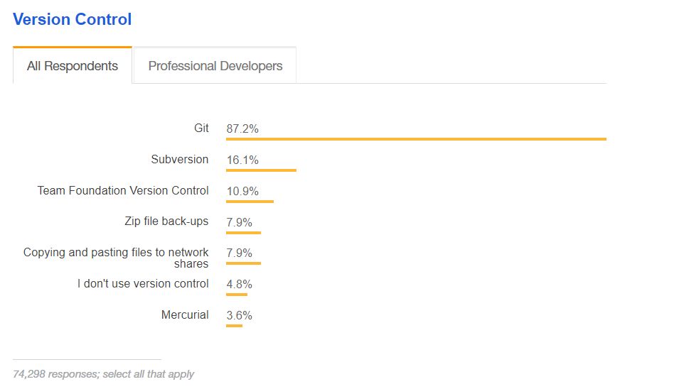
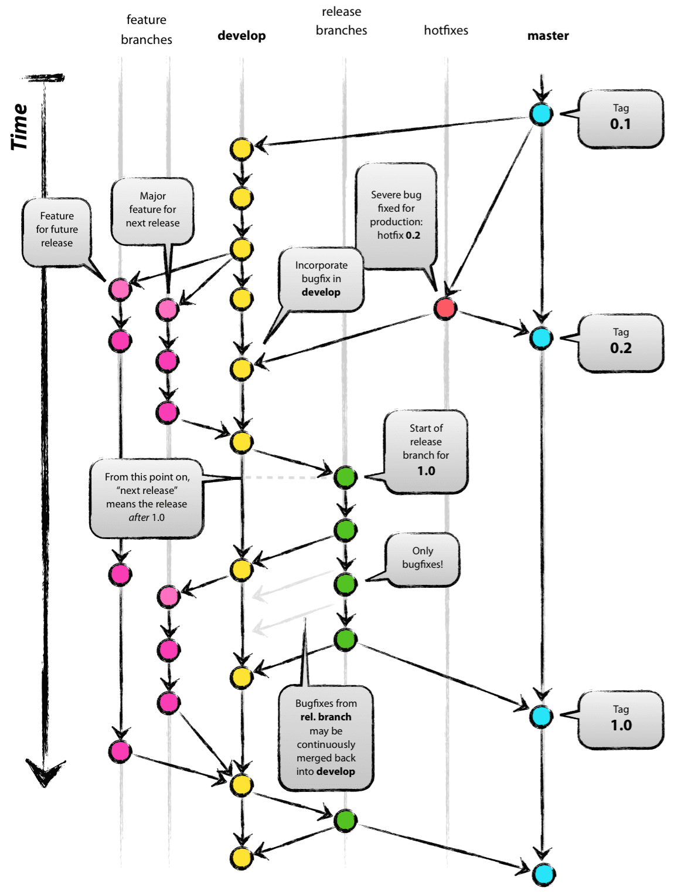
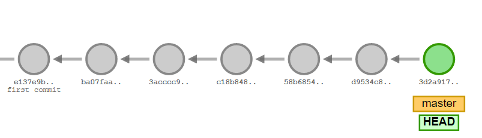
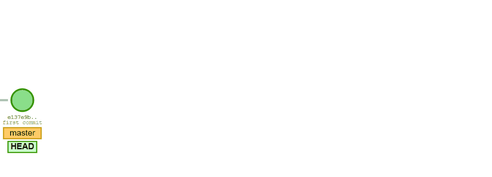
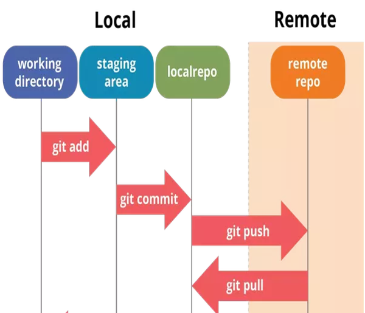
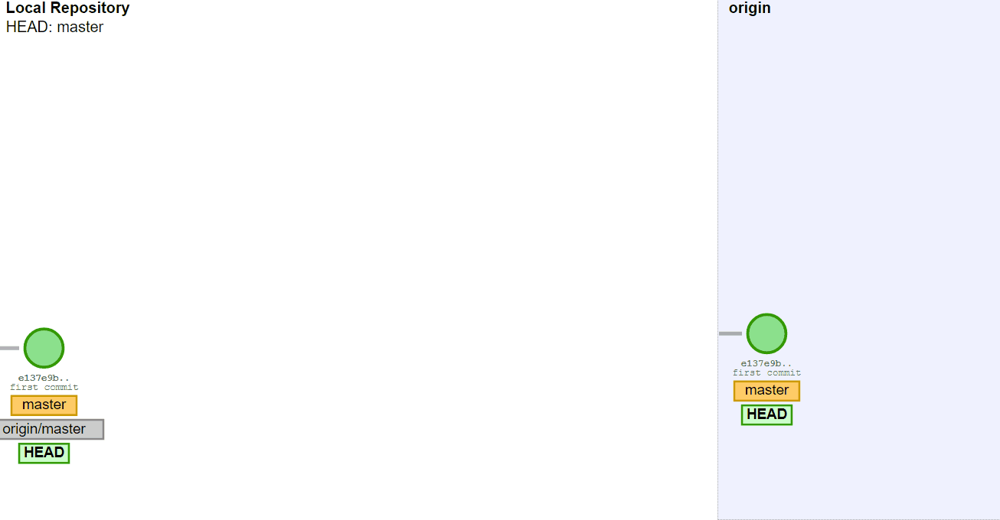

Git from the inside out
by George EleftheriouAgenda
- What is Git
- Git init/add/commit
- Git internals
- Git Branches
- Git Merges
- Undo changes – Revert vs Reset
- Git Remotes
- What is Github
- How to collaborate or contribute on Github
- Standalone and Collaboration WorkFlows
What is Git?
unpleasant person in British English slang
"I'm an egotistical bastard, and I name all my projects after myself."
First 'Linux', now 'git'
Why Git?
What is git?
- fast, lightweight, distributed version control system
- keeps a history of all your changes
- every change or set of changes is stored in a commit object
- all commits are local, but they can also be pushed on a server
- it is file based, does not require a database
- uses branches to isolate changes
- uses merges to icorporate your changes
- every user who works on a project has locally a complete copy of the project
- git usually refers to the command line tools
Git disadvantages
steep learning curve
Git Init
- Initializes a local repository
- Starts tracking files
- creates a .git folder which represents your local repository
$ git init myproject
Initialized empty Git repository in C:/projects/myproject/.git/
or for existing directory called myproject
$ cd myproject
$ git init
Initialized empty Git repository in C:/projects/myproject/.git/
Git add and commit
- It has a two step commit system
- First you add your files to an area called index, stage, or cache
- Then you create a commit
Git add and commit
$ echo "1">1.txt
$ echo "2">2.txt
$ echo "3">3.txt
$ git add .
$ git commit -m "first commit"
.GIT\OBJECTS
├───00
│ 750edc07d6415dcc07ae0351e9397b0222b7ba
│
├───0c
│ fbf08886fca9a91cb753ec8734c84fcbe52c9f
│
├───11
│ 299e93bdb3dfa7d792bc998fcb208fb7be40d3
├───7e
│ ab585dfd08ca9f7524e71369236c074c9e4d93
│
├───d0
│ 0491fd7e5bb6fa28c517a0bb32b8b506539d4d
│
├───info
└───pack
Lets examine these objects
$ git cat-file -t 11299e93
commit
$ git cat-file -p 11299e93
tree 7eab585dfd08ca9f7524e71369236c074c9e4d93
author geo5555 1569745416 +0300
committer geo5555 1569745416 +0300
first commit
$ git cat-file -t 7eab585df
tree
$ git cat-file -p 7eab585df
100644 blob d00491fd7e5bb6fa28c517a0bb32b8b506539d4d 1.txt
100644 blob 0cfbf08886fca9a91cb753ec8734c84fcbe52c9f 2.txt
100644 blob 00750edc07d6415dcc07ae0351e9397b0222b7ba 3.txt
$ git cat-file -t d00491fd7
blob
$ git cat-file -p d00491fd7
1
$ git cat-file -t 0cfbf0888
blob
$ git cat-file -p 0cfbf0888
2
$ git cat-file -t 00750edc
blob
$ git cat-file -p 00750edc
3
Files in .git/objects
11299e93bdb3dfa7d792bc998fcb208fb7be40d => commit
7eab585dfd08ca9f7524e71369236c074c9e4d93 => tree
d00491fd... => blob
0cfbf08... => blob
00750edc... => blob
What happens when you add and commit
- For each file in the index area, it creates a file object. The filename is a 40 hex hash of the file
- For each directory, it creates a tree object, which contains the hashes of the files in it, and creates a 40hex hash of this object which is also the filename
- It creates a commit object, that has the hash of the tree, the hash of the parent, author, email and commit message.

Second commit
I do some changes and do a second commit
tree cafa329b00ef375da85369e031d9417a6bb75f30
parent 11299e93bdb3dfa7d792bc998fcb208fb7be40d3
author geo5555 1569745476 +0300
committer geo5555 1569745476 +0300
second commit
$ git cat-file -p cafa329b
100644 blob d00491fd7e5bb6fa28c517a0bb32b8b506539d4d 1.txt
100644 blob 0cfbf08886fca9a91cb753ec8734c84fcbe52c9f 2.txt
100644 blob e9a3b44ce3a8d38cf54ac6698ff1d457b3d103f6 3.txt
100644 blob b8626c4cff2849624fb67f87cd0ad72b163671ad 4.txt
Find the differences
$ git cat-file -p 7eab585df
100644 blob d00491fd7e5bb6fa28c517a0bb32b8b506539d4d 1.txt
100644 blob 0cfbf08886fca9a91cb753ec8734c84fcbe52c9f 2.txt
100644 blob 00750edc07d6415dcc07ae0351e9397b0222b7ba 3.txt
$ git cat-file -p cafa329b
100644 blob d00491fd7e5bb6fa28c517a0bb32b8b506539d4d 1.txt
100644 blob 0cfbf08886fca9a91cb753ec8734c84fcbe52c9f 2.txt
100644 blob e9a3b44ce3a8d38cf54ac6698ff1d457b3d103f6 3.txt
100644 blob b8626c4cff2849624fb67f87cd0ad72b163671ad 4.txt
How many files changed?
How many blob files exist?
How many files exist in git repository?
tree .git/objects
.git/objects
├── 00
│ └── 750edc07d6415dcc07ae0351e9397b0222b7ba
├── 0c
│ └── fbf08886fca9a91cb753ec8734c84fcbe52c9f
├── 11
│ └── 299e93bdb3dfa7d792bc998fcb208fb7be40d3
├── 7e
│ └── ab585dfd08ca9f7524e71369236c074c9e4d93
├── b8
│ └── 626c4cff2849624fb67f87cd0ad72b163671ad
├── ca
│ └── fa329b00ef375da85369e031d9417a6bb75f30
├── d0
│ └── 0491fd7e5bb6fa28c517a0bb32b8b506539d4d
├── e9
│ └── a3b44ce3a8d38cf54ac6698ff1d457b3d103f6
├── f1
│ └── 2748e58780e2297d4881273c93bc3f5f5b40e0
├── info
└── pack
11 directories, 9 files
git diff
$ git diff 11299e9 f12748e
diff --git a/3.txt b/3.txt
index 00750ed..e9a3b44 100644
--- a/3.txt
+++ b/3.txt
@@ -1 +1,2 @@
3
+3a
diff --git a/4.txt b/4.txt
new file mode 100644
index 0000000..b8626c4
--- /dev/null
+++ b/4.txt
@@ -0,0 +1 @@
+4
Third commit
I delete a file
$ git cat-file -p 3643b67540a48cfcf40e75
tree 1d9ccfd19cea39f3b059627c43fea6e6a29d3a6c
parent f12748e58780e2297d4881273c93bc3f5f5b40e0
author geo5555 1569756216 +0300
committer geo5555 1569756216 +0300
deleted file 1.txt
$ git cat-file -p 1d9ccfd19cea39
100644 blob 0cfbf08886fca9a91cb753ec8734c84fcbe52c9f 2.txt
100644 blob e9a3b44ce3a8d38cf54ac6698ff1d457b3d103f6 3.txt
100644 blob b8626c4cff2849624fb67f87cd0ad72b163671ad 4.txt
How many blob files exist?
How many files exist in git repository?
tree .git/objects
.git/objects
├── 00
│ └── 750edc07d6415dcc07ae0351e9397b0222b7ba
├── 0c
│ └── fbf08886fca9a91cb753ec8734c84fcbe52c9f
├── 11
│ └── 299e93bdb3dfa7d792bc998fcb208fb7be40d3
├── 1d
│ └── 9ccfd19cea39f3b059627c43fea6e6a29d3a6c
├── 36
│ └── 43b67540a48cfcf40e7526968c4bf4dff1f93c
├── 7e
│ └── ab585dfd08ca9f7524e71369236c074c9e4d93
├── b8
│ └── 626c4cff2849624fb67f87cd0ad72b163671ad
├── ca
│ └── fa329b00ef375da85369e031d9417a6bb75f30
├── d0
│ └── 0491fd7e5bb6fa28c517a0bb32b8b506539d4d
├── e9
│ └── a3b44ce3a8d38cf54ac6698ff1d457b3d103f6
├── f1
│ └── 2748e58780e2297d4881273c93bc3f5f5b40e0
├── info
└── pack
13 directories, 11 files
Git log
$ git log
commit 3643b67540a48cfcf40e7526968c4bf4dff1f93c (HEAD -> master)
Author: geo5555
Date: Sun Sep 29 14:23:36 2019 +0300
deleted file 1.txt
commit f12748e58780e2297d4881273c93bc3f5f5b40e0
Author: geo5555
Date: Sun Sep 29 11:24:36 2019 +0300
second commit
commit 11299e93bdb3dfa7d792bc998fcb208fb7be40d3
Author: geo5555
Date: Sun Sep 29 11:23:36 2019 +0300
first commit
What is DAG?
- Directed Acyclic Graph
- Directed because every commit has a pointer to the parent commit
- Acyclic because if I follow the pointer I never get back to the same node

Head and Master
- Master is the main default local branch when the project is first created
- A branch is just a pointer to a commit
- .git/refs/heads/master -> 3643b67540a48cfcf40e7526968c4bf4dff1f93c
- .git/HEAD -> ref: refs/heads/master
- HEAD shows where you are in the tree. It is just a symbolic reference to the last commit and almost always points to a Branch
Head cont'd
- HEAD^ or HEAD~ is the parent commit of the HEAD
- HEAD^^ or HEAD~~ is the grandparent
- HEAD~5 is the fifth commit back in the tree
git diff
- git diff: View difference between Stage and Working Directory
- git diff --staged: View difference between HEAD and Stage
- git diff HEAD: View difference between HEAD and Working Directory
- Git diff
- Git difftool
Undo changes
- I cannot delete a commit that is referenced by another commit
- I can delete the last n commits – that is reset
- Or I can undo the changes of a single commit
by creating a new commit that has the inverse changes - that is revert
git reset
git reset 0198af3
git reset hard vs soft
- Git reset HEAD~3 will delete the last 3 commits
- git reset --soft uncommits but leaves them in stage - you can commit them again
- git reset --mix unstages the files (leaves them in the working directory) - you must add and commit
- git reset (same as --mix) is the default
- git reset --hard uncommits and unstages (deletes files)
git revert
undo the changes of one commit by creating another commit: git revert c34d...Branch
- It is just a pointer to a commit
- It is a file with 40 characters, very lightweight
- Does not create a copy of your files
- Changes made to one branch do not affect other branches
- Usually, when I want to create a change, I make a branch
Branches and Merges
- git checkout -b ft1
- git checkout -b ft2, commit, commit, commit, commit
- git checkout ft1, commit, commit, commit, commit
- git checkout master, commit, commit, commit, commit
- git merge ft2
- git merge ft1
3 way Merge
- When I want to include the changes from one branch to another I have to merge
- Git finds the common ancestor of the two trees
- Incorporates the changes of the two last commits in each tree and creates a new commit
FF Merge
Merge Conflicts
- When two branches have changed the same file
- Git will stop the merge and ask you to fix the conflict
- Files that have no conflict will be in the staging area
- Files that have conflict will be in the working directory
- The merge will not be done unless you fix the conflicts
- You have to fix each conflict and then manually add each file to staging area and commit
- If you don’t know how to do it, git merge --abort
Git rebase
- Reapply all the commits from your branch to the tip of another branch.
- Useful if you want to maintain a linear tree
- By reapplying commits git creates new ones.
- It changes history
- Never do it on a shared branch

Remote Repos
- A remote repo is a repo stored on a server
- The goal is maintain keep the local and remote repo in sync
- For git the remote repo is just like another branch
- You can push changes to the remote repo
- You can fetch changes from the remote repo and merge them (pull)

Push changes to Remote Repo
git commit, git commit, git push
Git Remote add
- Git remote add origin repo-url
- Usually it is called origin
- Another way to add a remote repo is to clone it
- Git clone repo-url
- This creates a new branch locally called origin/master
Standalone workflow
- create a folder for your project
- run git init
- start working on your files
- do git add.
- do git commit -m "changes
- create new feature git checkout -b mybranch
- do changes
- git add .
- git commit -m "changes"
- git checkout master
- git merge mybranch
- create a git hub repo
- add remote repo to local
- git push -u origin master
Collaboration Workflow
- git clone a project
- git checkout -b mybranch
- do changes
- git add .
- git commit -m "changes"
- git push origin mybranch
- create pull request
- let someone review and merge the code
- git pull (or git fetch, git checkout master, git merge origin/master)
Contributor Workflow
- Fork a project
- git clone a project
- git checkout -b mybranch
- do changes
- git add .
- git commit -m "changes"
- git push origin mybranch
- create pull request
- let someone review and merge the code
- git pull (or git fetch, git checkout master, git merge origin/master)
What is Github
- a hosting repository platform
- a colaboration platform
- a project management platform
- a web gui to git